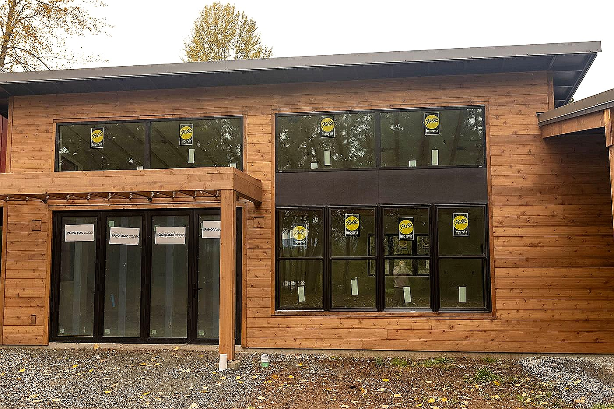

Designed for curb appeal and Northwest weather
New siding can change the look of a Bellevue home while also improving the wall assembly behind it. We look at existing siding, sheathing, windows, trim, and flashing before covering the exterior again.
Eastside home details matter
Bellevue homes can range from mid-century houses in Lake Hills to larger remodels near Somerset, Newport, Bridle Trails, and nearby Eastside neighborhoods. The best siding scope should fit the architecture, not make every home look the same.
Modern trim and window coordination
Many Bellevue projects need clean lines around large windows, garage returns, deck transitions, and covered entries. Those areas should be planned before siding installation so the finished exterior looks sharp and sheds water correctly.
Compare the full scope
A Bellevue siding estimate should spell out removal, repairs, wrap, flashing, trim, siding material, finish details, and cleanup. That makes it easier to understand the difference between a basic re-side and a more complete exterior upgrade.